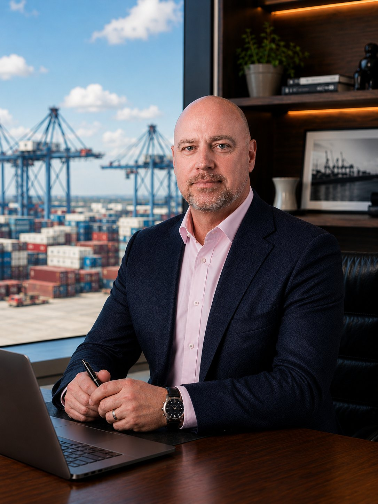

Growth, transition and change are where commercial drift and structural lag begin. JCL steps in to establish the authority and structure to contain them before they become expensive.
If misalignment is already costing you money, we fix that too.
No preparation required. No proposal. No obligation.
Maritime and logistics operators invest heavily in operational excellence. Schedules are optimized, assets are utilized, compliance is maintained, and the infrastructure to support global trade is built with discipline and capital intensity that few industries match.
The commercial engine rarely keeps pace. Not because it is ignored, but because operational delivery is visible and immediate while commercial structure is invisible until it starts to cost you. By the time the margin drift, the forecast gaps, and the pricing inconsistencies become undeniable, the operation has outgrown the commercial model it was built on.
The instinct at that point is to add headcount. Another sales hire, a regional manager, someone to own the problem. But the problem does not have an owner yet because the structure has not defined one. More resource into an ungoverned commercial model does not restore control. It distributes the problem further.
The most common response to commercial drift is to bring in outside expertise. A consultant who assesses the operation, maps the gaps, and delivers a structured set of recommendations. The diagnosis is usually accurate. The findings brief is usually thorough. And then the engagement ends, the report sits in a folder, and the structure that produced the drift remains unchanged because no one inside the business has the authority, the bandwidth, or the mandate to implement what was recommended.
Diagnosis without authority produces insight without change. And while the analysis is being reviewed, the commercial engine continues to drift and the opportunities it should be capturing are going elsewhere.
The engagement is not advisory and it is not a consulting retainer. It is a mandate. A defined period of fractional commercial leadership with explicit decision rights, clear outcomes, and a structured exit that leaves permanent leadership with a commercial engine they can sustain without external support.
The distinction matters because the problem is structural, not analytical. Structural problems require someone with the authority to change them, not someone with the expertise to describe them.
Randy Jameson has led commercial transformations with full P&L responsibility across global freight forwarding, liner shipping, supply chain solutions, and maritime services for over 30 years. The common thread across each engagement is not the industry or the geography. It is the pattern: a commercial engine that has drifted from the structure it needs to perform predictably, and the mandate to rebuild it.
JCL engagements are not delivered at arm’s length. Where the situation requires it, Randy is on the ground. Where structured remote engagement is sufficient, the operating rhythm is built to deliver the same discipline and accountability without the cost of permanent physical presence. What does not change is the mandate, the authority, and the commitment to a clean handoff when the engagement is complete.

Prospects identify with events, not symptoms. These are the situations that typically bring a JCL engagement into focus.
Commercial structures, customer ownership and forecasting rarely survive an acquisition intact. Integration lag creates execution risk that compounds quietly until it becomes visible in the numbers.
Decision rights become unclear. Forecasts lose credibility. Customer ownership shifts. A leadership transition is one of the highest-risk periods for commercial execution.
Growth exposes weaknesses that stable operations can hide. When the commercial model was designed for an earlier version of the business, scale creates structural gaps.
Governance expectations rise faster than commercial structures adapt. Revenue quality, forecast reliability and commercial operating model alignment become non-negotiable.
Accountability becomes distributed. Authority gaps appear. What worked inside the previous structure stops working when the structure changes around it.
Margin eroding without clear explanation. Forecasts revised too late to act on. Pricing governed by relationship rather than structure. These are patterns, not isolated events.
There is no pitch deck and no proposal process. The first conversation is 30 minutes. You describe what you are seeing. We ask the questions that matter. By the end of the call you will know whether the situation calls for a JCL engagement and whether there is a fit worth exploring.
If that is a conversation worth having, I would welcome 30 minutes at your convenience.
Book a 30-Minute CallOr reach Randy directly: randy@jclleadership.com
The situations below are not failures of effort or strategy. They are structural conditions that effort and strategy alone cannot resolve.
Volume is up, activity is high, and the business is winning work. But realized margins are not reflecting what was quoted, and no one can fully explain the gap. The variance is widening quietly, and the commercial structure that should be governing it is not.
The business has grown, added service lines, expanded geographically, and built genuine operational capability. The commercial architecture was designed for an earlier, simpler version of the organisation. It has not kept pace, and the gaps are starting to show.
A CEO has changed, a commercial leader has departed, or an acquisition has created ambiguity about who owns what. The team is working but decisions are stalling, accountability is distributed, and no one has the authority to reset the model.
The sales team has discretion but not governance. Pricing decisions are made deal by deal, discounting is negotiated rather than governed, and the floor keeps moving. The authority exists but the structure to protect it does not.
The numbers are consistently wrong in the same direction. Revisions come late in the cycle. Leadership has begun discounting the forward view before the period closes, which means the commercial engine is operating without a reliable instrument panel.
A PE investment, a debt facility, or a post-acquisition integration has raised the performance and reporting bar. The commercial model was built for a privately held operator running on relationships. It was not built for the scrutiny it is now under.
The instinct was to hire. Another sales leader, a regional manager, someone to own the problem. The headcount is in place but the structure that would make them effective is not. The problem has been distributed, not resolved.
Not every engagement begins with a performance problem. These mandates address the commercial execution risk that emerges during periods of growth, change and transition.
This is the fractional CRO engagement path for maritime operators, logistics providers, 3PLs, project freight forwarders, NVOCCs, and specialized heavy-lift carriers when commercial performance breaks down.
Every JCL engagement begins with a diagnostic. Before any intervention is proposed, the structural causes of the performance gap are identified and mapped. What is drifting, where the authority gaps are, and what a reset would require. That diagnostic stands alone as a deliverable — a findings brief with a clear recommendation. Some engagements end there. Most do not.
A focused diagnostic engagement that identifies which drift patterns are active, maps the structural breakdowns driving them, and produces a findings brief with a clear recommendation on what intervention is required and what it would deliver. Authority to implement is not assumed. It is defined at the outset of the next phase.
Authority granted to implement the recommended changes. Pricing governance enforced. Forecasting rebuilt on fact. Decision rights clarified. Sales and operations aligned to a single operating model. The commercial engine stabilized under mandate.
The commercial architecture embedded and handed off. Permanent leadership inherits a structure that performs without external support. The engagement ends when the handoff is clean, not when the calendar runs out.

Every engagement starts with the same question: what is the structural cause of the performance gap, and who has the authority to fix it? Not the presenting symptoms — the forecasts that miss, the margins that erode, the pricing decisions that vary by who is in the room. The structure underneath them.
JCL exists to help founders, C-suite executives, and PE boards address the structural gaps that emerge when commercial development falls behind operational growth, and rebuild a commercial engine that matches the organisation's strengths.
Advisory engagement is not sufficient when the problem is structural. Identifying the drift is not the same as reversing it. The mandate model was built on that distinction.
Containerized and MPV operations. Third-party representation replaced, customer ownership reclaimed, and pricing authority centralized.
Cargo volume increased 234% over the full engagement.
Decision rights reset across pricing, customer selection, and capacity allocation. Sales aligned to asset-backed demand.
Pricing stabilized and growth became predictable once governance and connectivity were restored.
Regional commercial leadership established with defined authority. Sales and operations unified under a single commercial system across multiple locations.
Engaged as commercial architect for a full reset of the client's commercial model across five countries. Decision rights clarified, pricing governance installed, and sales execution rebuilt under a structured, centralized commercial framework. The client doubled revenue in the first year and tripled it within three years.
"Randy is a seasoned, analytical global leader with the rare ability to bring structure, clarity, and commercial discipline to complex environments. He gets things done. Any company that hires him as a leader would be fortunate to have him onboard."Managing Director, Global Shipping & Supply Chain
"Randy is an exceptionally disciplined commercial leader. His communication, structure, and hands-on execution consistently elevated our joint results. Under his direction, we strengthened alignment, increased volume, and delivered meaningful commercial growth. Any organisation would benefit from his leadership."Branch Manager, Global Freight & Logistics
"His knowledge of the market, focus on critical performance indicators, and ability to operate at both strategic and detail level greatly improved our bottom-line. In a short period of time his leadership streamlined operations, eliminated waste, and delivered increased profitability alongside sustainable volume growth."Group CEO & Executive Vice Chairman, Energy, Ports & Infrastructure
No commitment. No proposal. Just a direct conversation about what you are seeing.
No preparation required.
No extended process.
A frank exchange about what you are seeing.
No obligation. No proposal. Just a direct conversation about what you are seeing and whether there is a fit.
"JCL works with private and family-owned maritime, project logistics, and heavy lift operators where commercial architecture gaps are creating execution risk. If that describes your situation, we would like to hear about it."
Randy Jameson | Principal Advisor, JCL | Houston, Texas